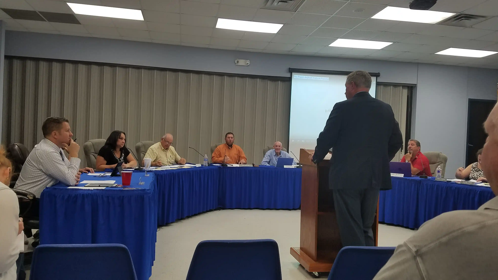
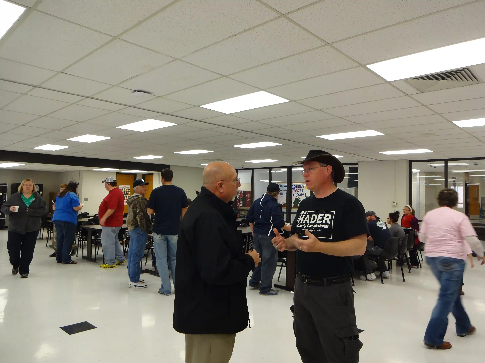
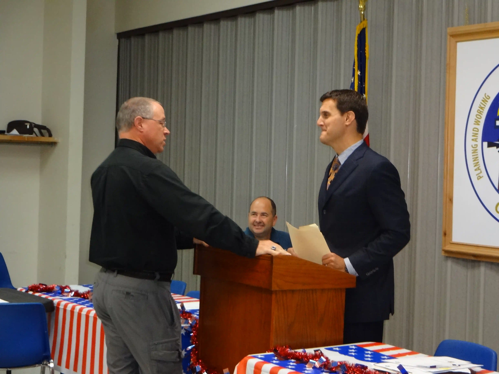
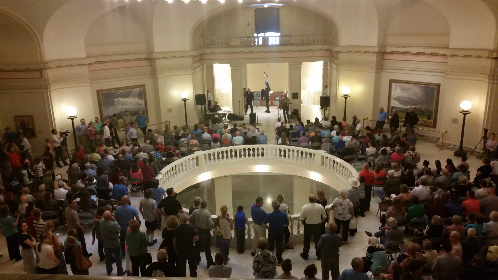
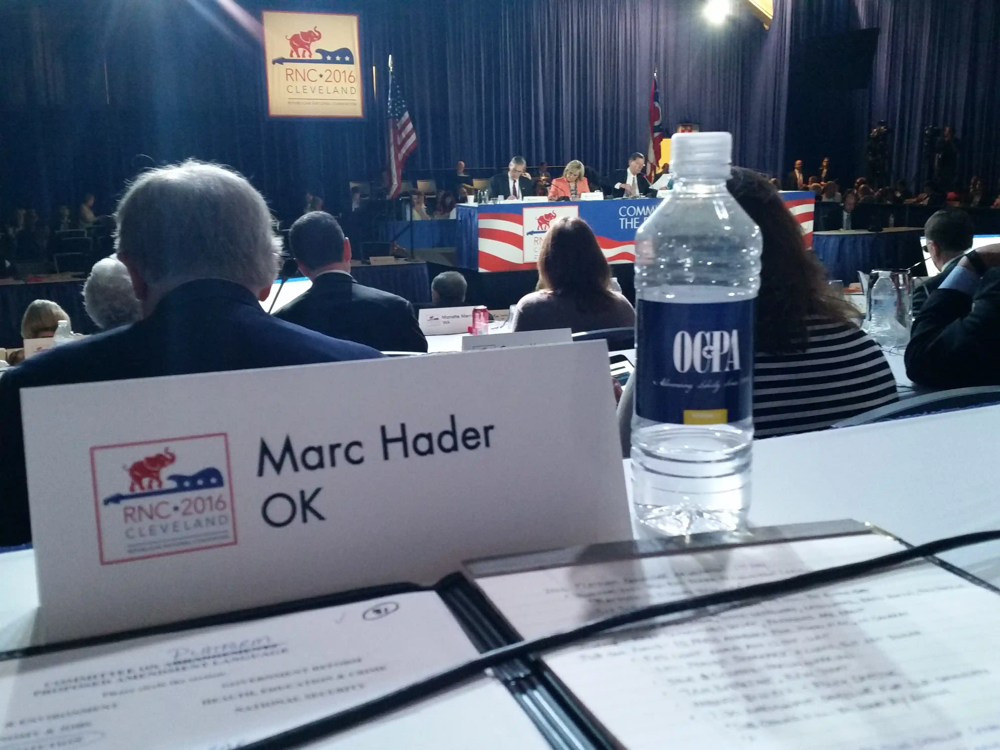
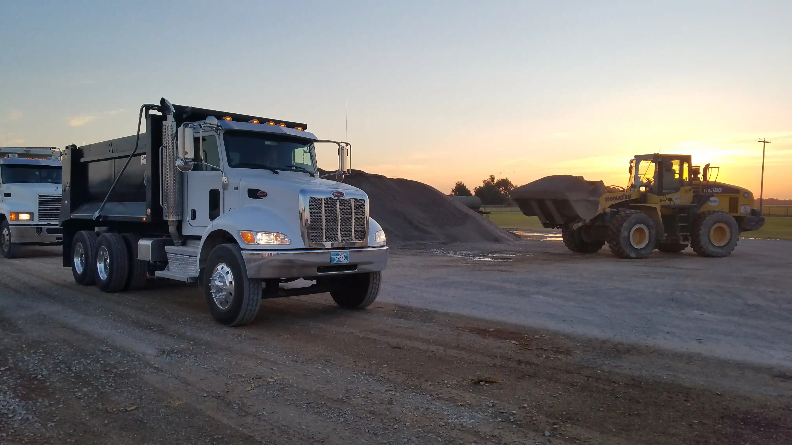

Marc Hader’s Priorities

Full-Time Leadership
County Commissioner is a full-time job — especially in Canadian County, the fourth most populous and fastest-growing county in Oklahoma. Marc Hader has served full-time as Commissioner before and plans to do so again, giving citizens his full focus rather than treating the role as a side job.

Protecting Citizens’ Rights
Marc believes a County Commissioner must be a steward of citizens’ rights and local interests. As Canadian County grows, issues like data centers, wind turbines, transmission lines, and water resources directly affect property owners and communities. Marc is committed to staying informed and ensuring growth protects citizens while preserving our county’s future.

Transparency & Accountability
Marc supports returning to performance and special audits by the State Auditor & Inspector. He helped lead two of the only three counties in Oklahoma history to pursue such audits and plans to restore this proven practice to ensure accountability and responsible stewardship of taxpayer dollars.

Citizen Access to Government
Marc believes government should be accessible to working citizens. He supports returning Commission Board meetings to cities and towns across Canadian County, held in the evenings so residents can attend and see their business conducted without taking time off work.

Strong Representation
Marc represents Canadian County wherever its interests must be defended — with cities, chambers of commerce, schools, county associations, the State Capitol, congressional offices, and national organizations. His relationships ensure Canadian County always has a seat at the table.

Modern & Efficient Government
Marc led the creation of Canadian County’s first HR Department, modernized county technology, and replaced paper-based systems with accurate, efficient workforce management tools. He also supports recording and archiving public meetings to restore trust, transparency, and public access.

First-Class Infrastructure
Roads and bridges are among government’s most important responsibilities. Marc brings decades of experience in transportation, engineering, and collaboration to deliver safe, efficient infrastructure. During his previous service, he helped build or pave over 90 miles of road, construct bridges, improve rural roads, and secure funding for counties impacted by energy exploration.